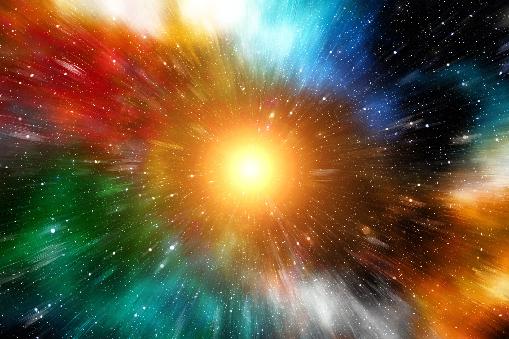
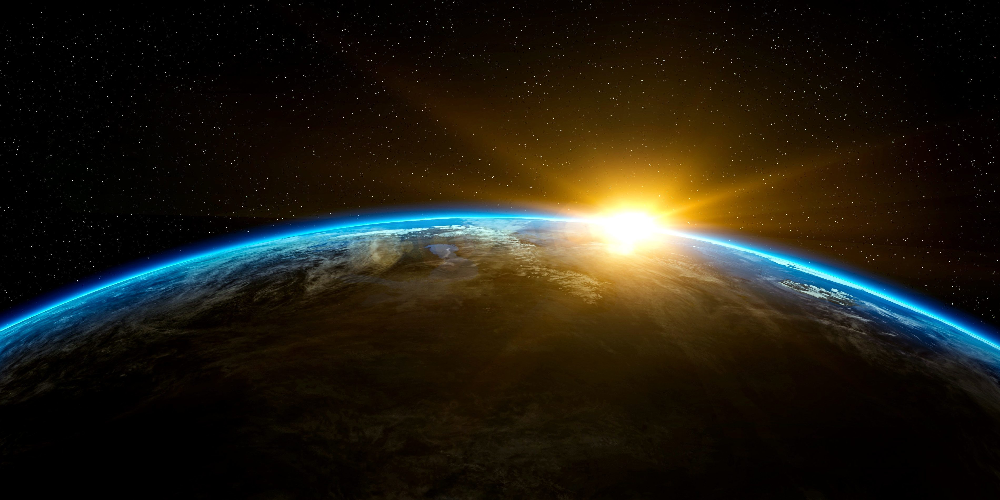

Estación de Contenidos Teóricos
Explora los misterios del cosmos a través de nuestras tres estaciones científicas adaptadas para sexto grado.
Estación 1: ¿Qué es el Universo y cuál es su origen?
El Universo es todo lo que existe: el espacio, el tiempo, todos los planetas, las estrellas y las galaxias enteras. Para comprender de dónde salió todo lo que vemos, los científicos crearon la teoría más aceptada:

- La Teoría del Big Bang: Explica que hace aproximadamente 13.800 millones de años, todo el universo estaba concentrado en un punto infinitamente pequeño y caliente. De repente, este punto se expandió de forma masiva (como una gran explosión cósmica) y comenzó a enfriarse, permitiendo la formación de la materia y los gases.
Estación 2: Las Galaxias y las Estrellas
La materia creada tras el Big Bang no se quedó flotando sola; por gravedad, se agrupó en gigantescas ciudades en el espacio.

- Las Galaxias: Son enormes agrupaciones de miles de millones de estrellas, planetas, gas y polvo cósmico. Nosotros vivimos en una galaxia con forma de espiral llamada la Vía Láctea.
- Las Estrellas: Son gigantescas esferas de gas brillante que producen su propia luz y calor. Nuestro Sol es la estrella más cercana a la Tierra y la que nos da la energía necesaria para la vida.
Estación 3: Nuestro Sistema Solar
En uno de los brazos de la Vía Láctea se encuentra nuestro hogar: un vecindario espacial gobernado por la fuerza de gravedad del Sol.

- Los Planetas: Son cuerpos celestes que orbitan alrededor del Sol. Hay 8 planetas principales divididos en interiores o rocosos (Mercurio, Venus, Tierra, Marte) y exteriores o gaseosos (Júpiter, Saturno, Urano, Neptuno).
- Satélites y Cuerpos Menores: Los satélites son cuerpos que giran alrededor de los planetas, como nuestra Luna. También nos rodean los asteroides y los cometas.

¿Qué es el Sol?
El Sol es una estrella gigante (una enorme bola de gas caliente y brillante). Es el cuerpo celeste más grande de nuestro vecindario y gobierna el Sistema Solar gracias a su poderosa fuerza de gravedad, la cual mantiene a todos los planetas girando ordenados a su alrededor.

¿Qué es la Luna?
La Luna es el satélite natural de la Tierra. A diferencia del Sol, la Luna no tiene luz propia; brilla porque refleja la luz solar. Los satélites naturales son cuerpos rocosos más pequeños que no orbitan al Sol directamente, sino que giran alrededor de un planeta.